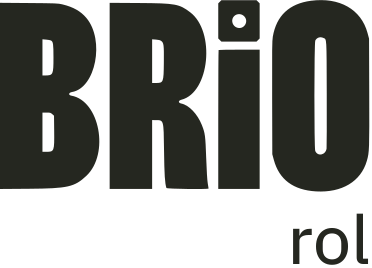
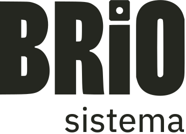
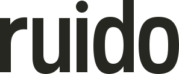
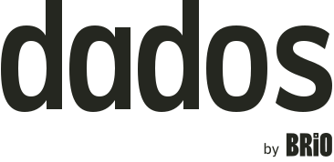
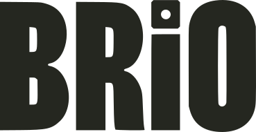

Familia Brío
Logotipos / versión de trabajo









Tamaños de uso
Anchos reales, sin ampliar la captura.
Referencias orientativas para pantalla. El soporte y la densidad de píxeles deben comprobarse en la aplicación final.
Firma de procedencia en la web
Muestra separada de los logotipos.
Un proyecto de

Puede situarse en el pie u otra zona independiente de la herramienta.